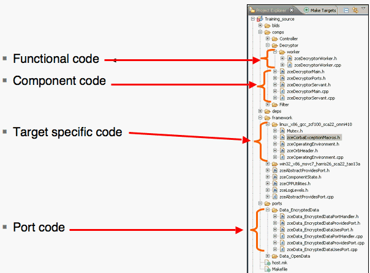

Code generation works from the component or device definition. You can generate 100% of the code, including all of the code
for the CF interface: CF::Resource (for components) or CF::Device, CF::LoadableDevice, CF::ExecutableDevice, or
CF::AggregateDevice (for devices). You do not have to modify this code. You will also generate skeletons for the functional code, which
you can extend.
Component code is the code that handles the CF::Resource interface. Device code is the code that handles the
CF::Device, CF::LoadableDevice, CF::ExecutableDevice, or
CF::AggregateDevice. The Interface code manages the uses and provides ports.
The Functional code contains the actual signal processing or control behavior of the component or device. The Code Generator generates an empty
(but compilable) skeleton for this functional code. You then extends the skeleton with your own code.
In Figure 1, the functional code (the orange part) can be seen as surrounded by the SCA component code (the grey part). The grey part is 100% generated from the Code Generator. You implement the orange part by extending the skeleton code. The same visual image can be applied to the SCA device code.
The generated source directory structure contains: functional code, component code, target specific code, and port code.
